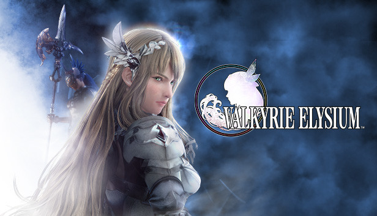

videogame_asset Lol Worlds 2022
El rey demonio vuelve a una final despues de 5 años
videogame_asset Escapando de la peste negra - A Plague Tale Requiem
A Plague Tale: Requiem es un videojuego de acción-aventura y sigilo desarrollado por Asobo Studio y distribuido por Focus Entertainment. Este es una secuela de A Plague Tale: Innocence (2019) y continua la historia de los hermanos Amicia y Hugo de Rune, los cuales buscan una cura para la enfermedad en la sangre de Hugo en el sur de Francia, mientras huyen de soldados de la Inquisición y hordas de ratas, causantes de la Peste. El juego salió a la venta el 18 de octubre de 2022 para las plataformas Windows, Nintendo Switch, PlayStation 5 y Xbox Series X/S..

| Genero | Aventura - Sigilo - Puzzles |
| Fecha de Lanzamiento | 18 de Octubre de 2022 |
| Plataformas |
Xbox-Series PC Playstation 5 Nintendo Switch (Cloud) |
| Modos de Juego | 1 Jugador |
| Pais | Francia |
| Desarrollador | Asobo Studio |
| Sitio Web | A Plague Tale: Requiem |
Jugabilidad
Al igual que su predecesor, Requiem es un videojuego de acción-aventura en tercera persona. El jugador controla a Amicia y debe enfrentarse tanto contra soldados de la Inquisición francesa como hordas de ratas que están contagiando la Peste negra. La jugabilidad es muy similar a la del primer juego, aunque el sistema de combate se ha diversificado significativamente. Amicia está equipada con armas, tales como un cuchillo para apuñalar a los enemigos, una honda para lanzar piedras y una ballesta para derrotar enemigos con armadura. Se puede combinar acciones como disparar pernos de ballesta, lanzar tarros y piedras y crear mezclas alquímicas. Además de las mezclas Ignifer y Extinguis, las cuales permiten generar encender y apagar fuego, respectivamente, el juego introduce Tar, el cual aumenta el radio de la fuente de luz, pudiendo usarla para prender en llamas a los enemigos
Las localizaciones también son más extensas en Requiem, dando al jugador un mayor número de opciones de progreso. El sigilo ha evolucionado. A diferencia de en Innocence, Amicia no muere de un golpe de los enemigos y puede volver a ocultarse en sigilo tras ser descubierta por los enemigos y contraatacar sus ataques si se acerca demasiado a ellos. Hugo puede usar la habilidad Echo, la cual revela la posición de los enemigos a través de las paredes. Hugo también puede controlar las hordas de ratas para acosas a los enemigos. De manera similar al primer juego, las ratas, las cuales tienen miedo de la luz, juegan un rol importante en el juego. Amicia y Hugo deben permanecer en la luz para evitar ser devorados por las ratas. Amicia puede usar las ratas a su favor, utilizándolas para resolver puzles o incluso para matar a los enemigos
El juego también incluye un sistema de progresión, en el cual el jugador consigue nuevas habilidades. Los jugadores centrados en el sigilo consiguen habilidades que les permiten espiar más eficientemente, mientras que aquellos que prefieren un estilo de juego más agresivo consiguen habilidades de combate.1 También se puede mejorar el equipamiento y la ropa del jugador
Premisa
Seis meses después de los eventos del primer juego, los hermanos Amicia y Hugo de Rune tienen que viajar al sur de Francia para buscar una isla donde se puede encontrar una cura para la misteriosa enfermedad en la sangre de Hugo. Hugo se ve abrumado por sus nuevos poderes, mientras que Amicia debe hacer frente al trauma emocional de matar enemigos y otras acciones para proteger a su hermano y a ella misma
Desarrollo
Requiem fue desarrollado por la empresa francesa Asobo Studio. Al igual que en Innocence, el juego se desarrolla en la Francia medieval en el siglo XIV. Para asegurar el realismo de las localizaciones en el juego, el equipo colaboró con Roxane Chila, doctora en Historia Medieval, y buscó en Wikipedia y otros sitios web especializados para obtener información adicional. También se inspiraron en las experiencias personales de algunos de los miembros del equipo. Decidieron desde el principio que el juego tendría una paleta de colores diferente en comparación con su predecesor. Como resultado, el escenario del juego se trasladó de la lúgubre región de Aquitania, devastada por la guerra, a la Provenza, más colorida y vibrante. Según el escritor principal del estudio, Sébastien Renard, esto creó un "contraste más agudo entre la dura realidad del escenario medieval, en el que están sucediendo eventos terribles, y entornos hermosos, a veces inexplorados". Para crear oportunidades adicionales para resolver acertijos, Requiem presenta varias ubicaciones nuevas, incluidos puertos y mercados.
A Plague Tale: Requiem fue anunciado por Asobo Studio y la distribuidora Focus Entertainment durante la conferencia del Electronic Entertainment Expo (E3) 2021 de Microsoft. El juego compitió por el Tribeca Games Award y fue incluido como selección oficial. El juego se lanzó al mercado el 18 de octubre de 2022 para Windows, PlayStation 5 y Xbox Series X y Series S. El lanzamiento de una nueva generación de consolas permite que el juego renderice más de 300 000 ratas a la vez. El mismo día también se lanzó una versión en la nube para Nintendo Switch.
Capturas del juego
searchBuscar Articulo
videogame_asset Proximos Lanzamientos
| Sonic Frontiers | 08-11-2022 | |
| God of War Ragnarok | 09-11-2022 | |
|  | Valkyrie Elysium | 11-11-2022 |
 |
Pokemon Escarlata/Purpura | 18-11-2022 |
videogame_asset Eventos eSports
| LoL Worlds 2022 | ||
| OWL Playoffs | DAL vs SEO | |
| CS:GO IEM Rio | C9 vs  IMP IMP |
|
| OWL Playoffs | HOU vs LDN |